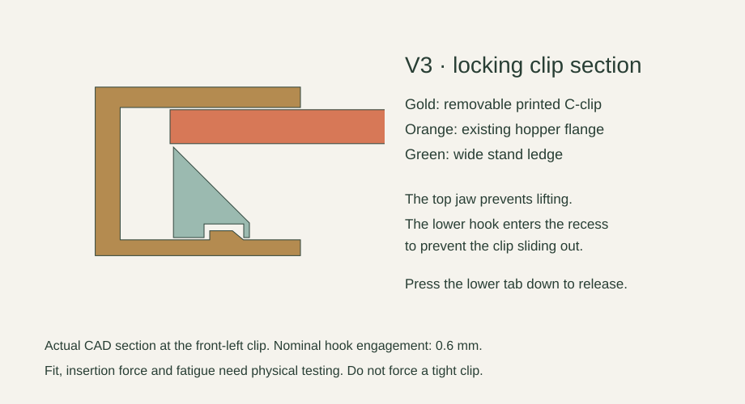
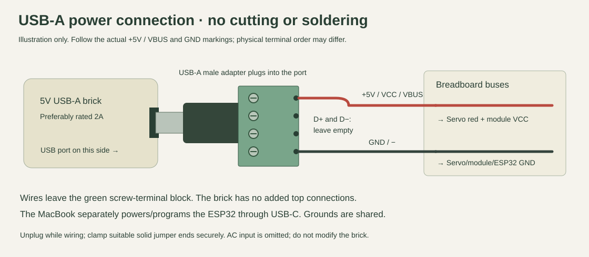
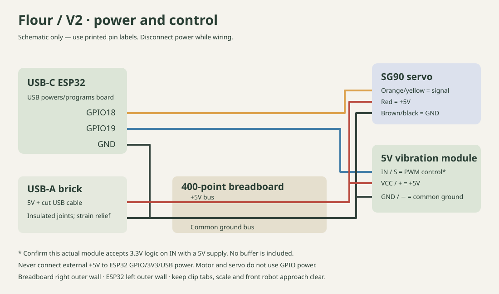

Print the wide stand, hopper, gate, lid and two locking clips together on your Bambu Lab A1.
Open the V3 geometry-only 3MF in Bambu Studio; keep the nested layout and supplied orientations.
0.2 mm layers, 3 walls, 5 top/bottom layers, 20% gyroid, no supports.
The gate nests inside the stand opening; both clips nest in the left roof window.
02 / Turn the wide stand over
The stand prints upside down. Turn it over so the two side walls rest on the bench, leaving the front open.
The recessed hopper pocket faces upward.
Clear bay: 200 mm wide; stand footprint: 224 × 140 mm; height: 190 mm.
Place your 105 × 125 × 17 mm scale on the table in the opening, with buttons facing forward.
03 / Secure the servo
Mount the SG90 above the hopper flange, with its output shaft pointing downward.
Rest its mounting ears on the two raised pads.
Use two small zip ties through the rectangular slots. Keep the shaft hole clear.
Leave the horn off until the servo is electronically centered.
04 / Attach the vibration module
Tape the existing 5V PWM vibration module firmly to the outside of the hopper.
Keep the motor and board outside the powder path.
Use thin firm tape on the board back; insulate exposed solder joints.
Face its connector outward so the lead cannot enter the moving gate.
05 / Place the electronics
Tape the 400-point breadboard to the right outer wall and the ESP32 to the left outer wall.
Center the breadboard about 50 mm above the table, long edge running front to back.
Use insulating foam tape behind the ESP32; keep USB-C accessible toward the front.
Keep the entire front opening clear for the scale, cup and robot fingers.
06 / Connect the USB-A adapter
Plug your four-terminal USB-A male adapter into the 5V brick. Only two screw terminals carry power to the breadboard.
With the brick unplugged, secure two suitable solid jumper ends in the terminals marked +5V / VCC / VBUS and GND / −. Tug-check them.
Connect +5V → positive bus; GND → ground bus and ESP32 GND. Leave D+ and D− empty. Confirm the real adapter markings and polarity before connecting electronics.
The brick lies on its side in this illustration: its USB port faces the adapter, and wires exit the green terminal block at the far end. MacBook USB-C separately powers/programs the ESP32.
Adapter +5V / VCC / VBUS
Breadboard + bus
Adapter GND / −
Breadboard − bus
D+ and D−
Leave empty
ESP32 GND
Breadboard − bus
07 / Wire the vibration module
Its motor uses 5V power; GPIO19 supplies only the 3.3V PWM control signal.
VCC → +5V bus. GND → ground bus.
IN/S → GPIO19 only after confirming 3.3V input compatibility.
Before connecting IN to the ESP32, power the module alone and check IN-to-GND. A near-5V reading needs investigation first.
Module VCC
+5V bus
Module GND
Ground bus
Module IN / S
GPIO19 — compatibility check first
08 / Wire the servo
Connect the SG90 to the power junction and GPIO18.
Red → +5V. Brown/black → common ground.
Orange/yellow → GPIO18.
Use male jumpers into the servo socket and female ends on ESP32 headers. Check that your kit includes the needed ends.
Servo red
+5V bus
Servo brown / black
Ground bus
Servo orange / yellow
GPIO18
09 / Install MicroPython
Use Python on your computer to flash the classic ESP32 and copy the controller. Arduino IDE is not needed.
Disconnect external motor/servo power. Use a USB-C data cable.
Install scripts/requirements.txt and run scripts/setup_device.py using your COM port and downloaded firmware.
Read docs/SOFTWARE.md for the exact commands and ESP32 model check.
10 / Center before fitting the horn
Reconnect the external 5V supply, then center the servo with the gate and horn still removed.
Connect your computer/phone to FlourProto and open 192.168.4.1.
Press Center with horn removed. The nominal closed pulse is 1500 µs.
Disconnect external power before installing the horn.
11 / Put the horn into the gate
The horn is the small plastic arm included with the SG90; it is not a printed part. Use the supplied double-arm horn.
Seat the horn in the printed gate recess, spline socket facing up toward the servo.
Secure it with two small zip ties through the paired slots.
Put tie heads in the underside reliefs. Trim the tails flush.
12 / Fit the gate and one screw
Fit the horn to the centered servo shaft with the gate hole turned away from the hopper outlet.
The animation uses a nominal 60° closed position and a 0° open position.
Install only the supplied servo horn screw from beneath the gate.
Adjust card shims under the servo ears for roughly 0.4–0.8 mm clearance.
13 / Seat the hopper
Lower the hopper flange into the wide stand pocket.
Check the flange sits flat and the two clip access notches are unobstructed.
Guide the wires outside the stand and away from the gate.
Put the cup on your scale, centered beneath the outlet. It must not touch the stand or gate.
14 / Snap in both locking clips
Push one printed C-clip through the front-left notch and the other through the rear-right notch.
Upper jaw goes over the hopper flange; lower jaw goes under the stand ledge.
Push until the small lower hook engages the underside recess. Pull gently to check it cannot slide back out.
To remove, stop and unplug power, press the lower release tab downward and slide the clip out.
15 / Dress the cables
Finish mounting the breadboard and ESP32 on the outer side walls, with strain relief for the cables.
Support the USB-A brick and four-terminal adapter on the bench beside the stand; avoid loading the USB connector.
Give the hopper leads a small service loop, then secure them outside the walls.
Verify the gate clears both clips, all wires and the cup. Keep the front robot approach open.
16 / Calibrate empty, then add flour
Test the gate empty before a small flour trial.
Motor control stays disabled until you verify the module input, then explicitly enable it in the setup page.
Set closed/open pulse widths in small increments, staying clear of mechanical stops.
Start with one teaspoon of flour and a short, low-duty dose. Add the lid.
17 / Dose, weigh and collect
Arm and run a short dose. The stand is shown transparent to reveal the gate; the illustrated cup then leaves through the open front.
Stop vibration and allow the scale reading to settle before weighing.
The controller limits a dose to 5 seconds and automatically disarms after 60 seconds.
Validate the real cup, gripper fingers, wrist clearance and robot reach at low speed before pickup.
Test the clip fit first
Before the long stand print, optionally print one locking clip plus the small fit coupon. Its 11.3 mm stack and underside recess match the clip interface. Check snapping, tug retention and release without force. This does not establish long-term strength.
How the locking clip works

Computer-side Python setup
See the repository's complete software instructions for flashing, calibration and Python control commands. They target classic ESP32-WROOM, not C3/S3.
USB-A power connection

Read the real +5V and GND markings; leave D+ and D− empty. No cutting or soldering is needed.
Placement and wiring

The breadboard uses tape on the right outer stand wall; ESP32 uses insulating foam tape on the left wall. USB-A brick and four-terminal adapter stay supported on the bench. Keep the front robot approach and both clip release tabs clear.